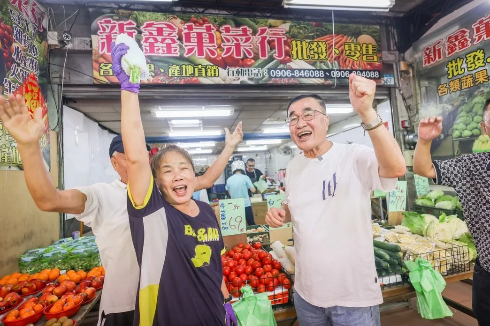
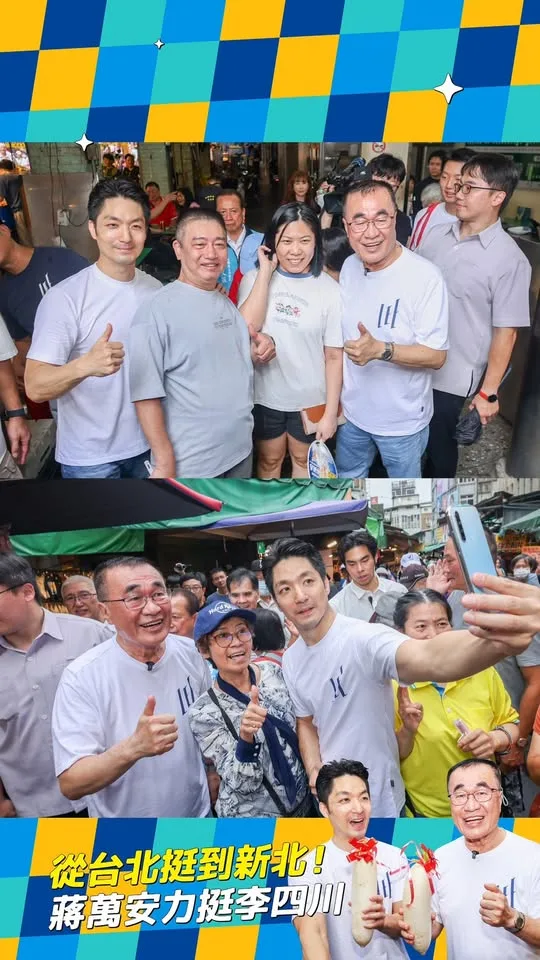
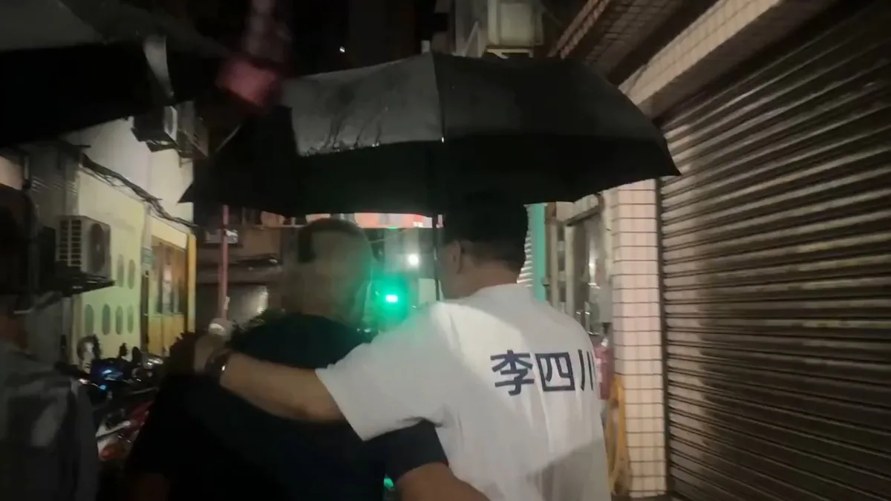
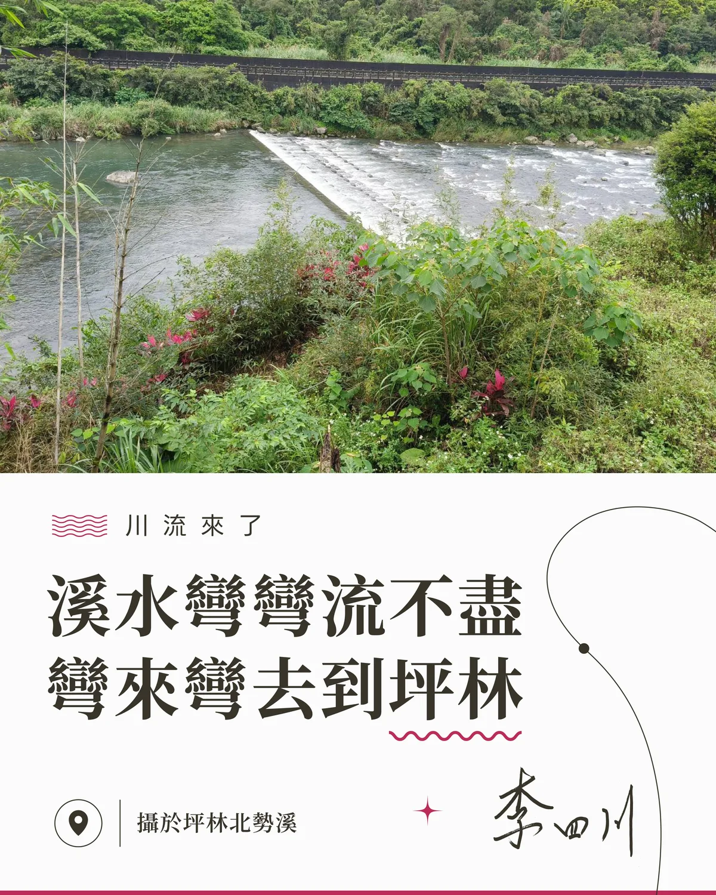
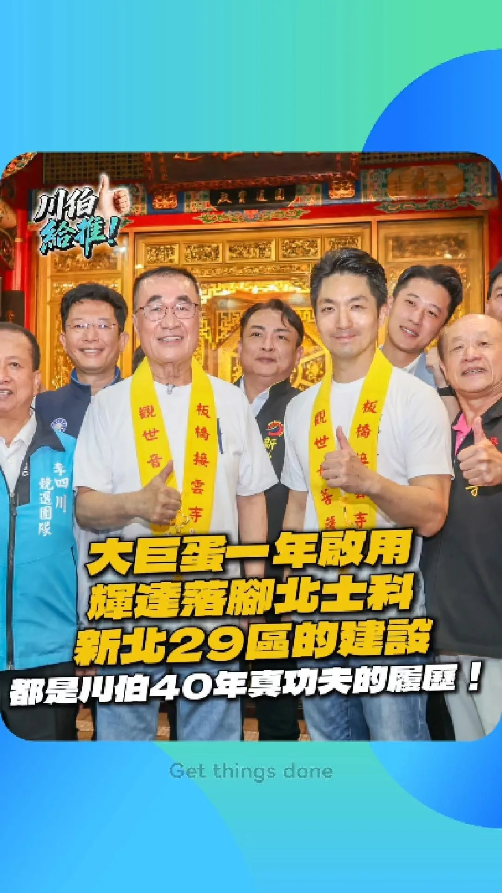
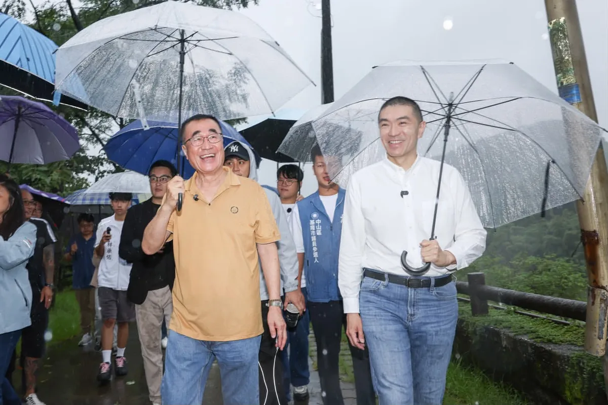
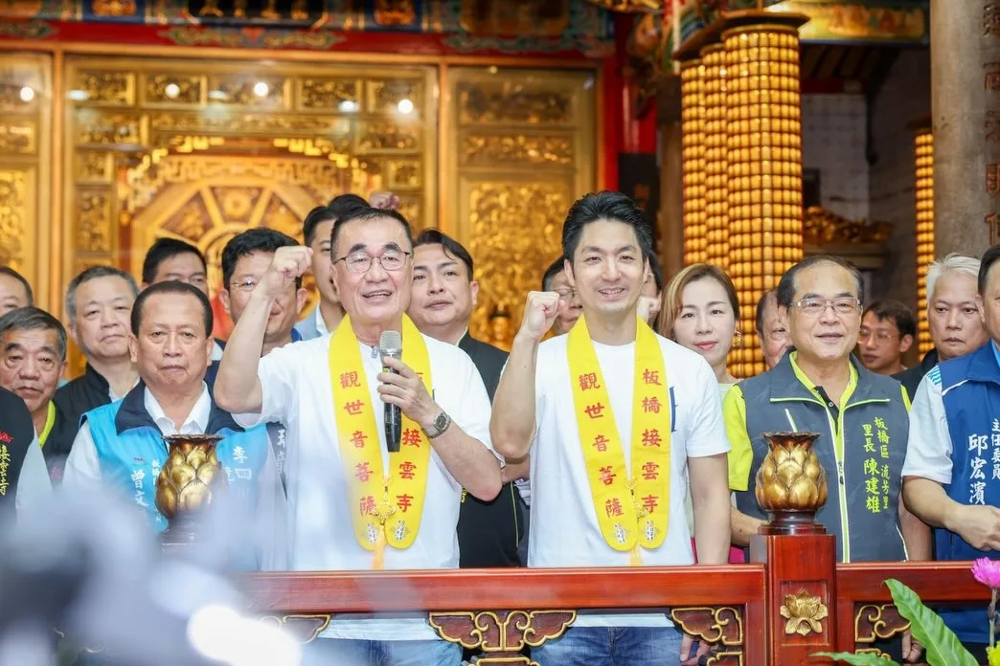
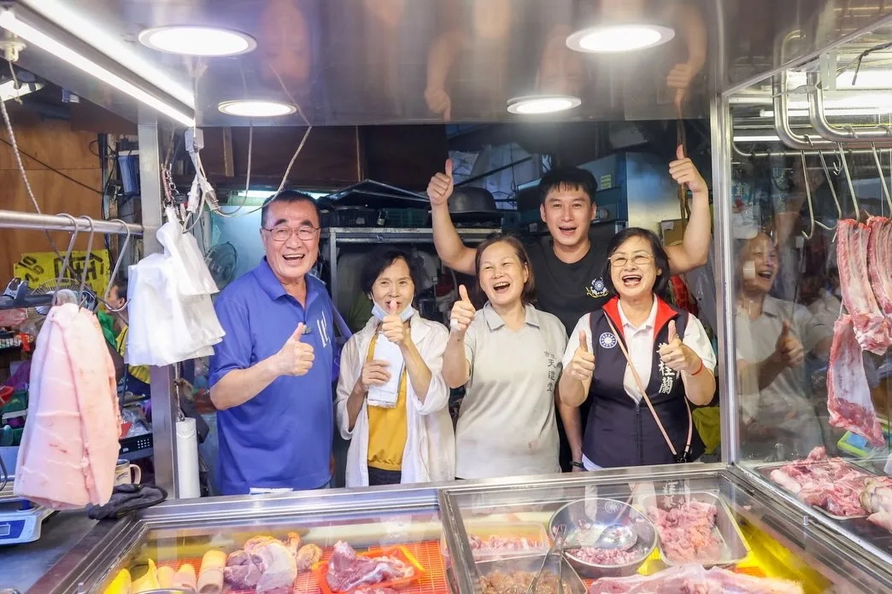
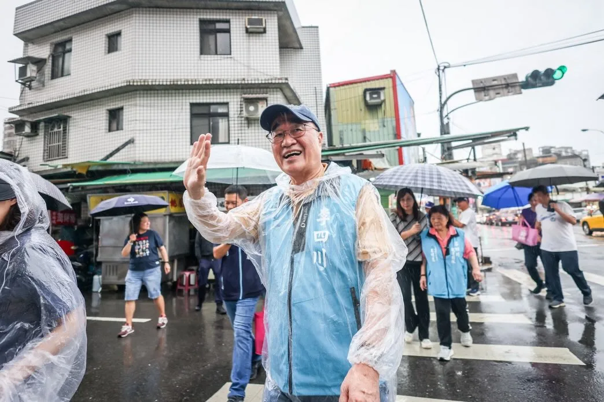
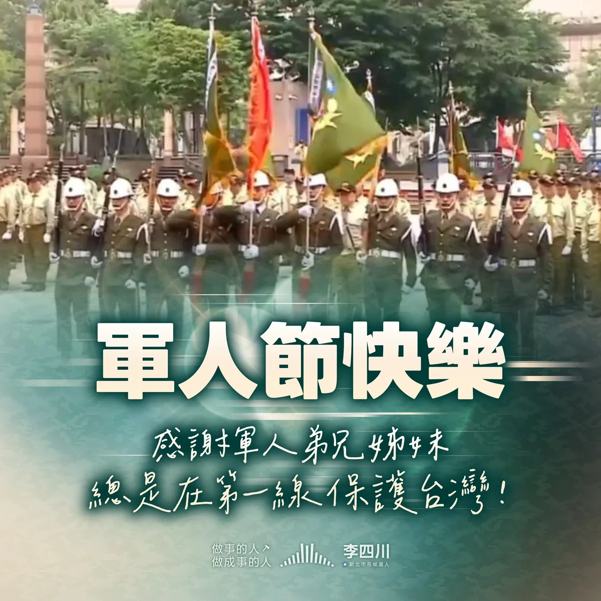

李四川hammer__lee

@hammer__lee:有人來看海，我看海，也看這條路能不能再往前接。 東北角這條海岸步道，可以一路接到淡水。 可以騎車，也可以走路。 我拍的不只是海景，是藍圖。 風景是老天給的，路是人接的。
Accounts
| 平台 | 帳號 | 已收錄貼文 | 最後更新 |
|---|---|---|---|
| https://www.facebook.com/p/%E6%9D%8E%E5%9B%9B%E5%B7%9DHammer-Lee-100051818071280/ | 104 | 2026-09-07 07:30 | |
| https://www.instagram.com/hammer__lee/ | 96 | 2026-09-11 18:00 | |
| Threads | https://www.threads.com/@hammer__lee | 77 | 2026-09-11 18:00 |
Timeline
顯示 281 / 281 則
@hammer__lee:有人來看海，我看海，也看這條路能不能再往前接。 東北角這條海岸步道，可以一路接到淡水。 可以騎車，也可以走路。 我拍的不只是海景，是藍圖。 風景是老天給的，路是人接的。

二十幾年前，我也被問過一次「什麼時候蓋得好」。 那顆小巨蛋，今天還在用。 後來，我又被問一次「什麼時候可以啟用」。 那顆大巨蛋，今天大家都在看球。 新北這一顆，我要讓大家早一點進場，用久一點。

「川ㄟ ～ 愛凍蒜喔！」，賀！我一定拚下去。 鄉親這一聲「川ㄟ」，我聽了心情高興的在飛。 一早來到新莊裕民市場走走，向攤商與市民朋友問聲好，每一聲加油，我都聽到了。 「我們支持你」，又是悄悄話，所以我不能告訴你是誰說的，但是我知道鄉親對我的鼓勵，有滿滿期待，有滿滿託付。 裕民市場裡，有機車來來往往，但總會那麼幾輛為我停下來，就為了給我一個機會，能握住他們的手。 說實在，如果大拇指可以集成冊，那這個光榮印章，我應該集滿了好幾本。這是我的精神糧食，讓我拚得踏實。 一條市場道路，真的長，但好朋友陪我一起走，時間一點都不漫長。因為累了，還有可愛的鄉親，倒一杯仙草茶讓我喘口氣。 今天議長蔣根煌、議員蔡健棠、議員候選人王珮宇，還有地方頭人，陪著我走，充滿力量一點都不累。 「我好開心看到你」，看到新莊好朋友我更是滿心歡喜。

賣了幾十年菜的老闆，把手上的生意先放一邊，拿起手機對著我們拍。 說實在，那一刻我有點不好意思。人家在做生意，我們來打擾。 昨天一早，蔣萬安市長從台北過來，陪我走板橋福德市場。一攤一攤過去，握手、合照，老闆娘手機舉起來等，我就湊過去給她拍一張。 有位鄉親端出兩根綁著紅緞帶的白蘿蔔，說：好彩頭，送給你們，凍蒜。 市場裡沒有樣本數，也沒有信心水準。每一隻伸過來的手，都是真的。 台北挺新北，不會只有到了選舉才開始。三年多來難的事我們一起扛過，接下來雙北要接的線、要通的橋，也一樣。 他們今天把生意先放一邊，我們就得把明天的日子顧好一點。
在雨中，鄉親送我的見面禮，是那一聲「川伯加油」 今天傍晚，我到三峽黃昏市場，向冒雨前來採買的鄉親問好。老話一句，雨再大，他們熱情如火，我真有點捨不得走。 在雨中忙碌，還是有許多鄉親，願意停下手邊的事，握住我的手。 有一位年輕人，把車靠邊停下，跑過來要和我合照，他說「我是你的粉絲」，說實在，我真有點歹勢，但也充滿感恩。 還有餐廳老闆，帶著員工出來為我加油，為我鼓勵，我絕對會繼續努力。 市場承載著在地人記憶，寫著三峽人的日常，撐起三峽人的生活。 新北雨不停，三峽人的熱情，讓我心中放晴。
@hammer__lee:「我可以抱你們嗎？」 一位媽媽走過來，對著我和蔣萬安市長這樣說。她說，一定要加油。 當然可以。我們全力以赴。 今天一早，我跟蔣市長走了板橋接雲寺、板橋慈惠宮和福德街市場，一攤一攤過去，每一雙手都是熱情的。 我們握著每一雙伸過來的手，看著每一個人的眼睛。想講的其實只有一句：請放心，雙北交給我和蔣市長。 有位老闆突然遞出一把傘，說要幫我們遮風擋雨。說實在，聽了真的很感動。但這件事得反過來——傘，本來就該我們幫鄉親撐。 三樓還有鄉親探出頭，對我們比大拇指。那個大拇指，我收到了。 前一天侯友宜市長陪我登記，今天蔣市長陪我掃街。新北台北有共同的理念、最近的距離、最深的情感。 雙北，不用磨合。 我跟蔣市長是三年多的好戰友。大巨蛋完工啟用、捷運多線同時動工、輝達留在台灣，難的事我們都一起扛過。接下來，要打造雙北30 分鐘核心生活圈——兩座城市一條線走到底。 革命情感兄弟情，不懼風雨向前行。

海納百川，「侯李」好市長。 團結一心，我們都挺李四川。 今天一早，我在 @hou.yuih 侯友宜市長、國民黨籍議員與參選人、無黨籍議員以及民眾黨議員與參選人陪同下，正式登記參選新北市長。 「我把棒子交給李四川」，侯市長這句話，是鼓勵我向前最大的動力。 一路走來，我與侯友宜市長始終有默契，始終並肩作戰。我們共同的信念，是不辜負市民期待，要「侯李」好市長。 一路走來，我不分黨派不分顏色，廣納意見爭取最大支持， 團結一心，要「海納百川」。 軌道123、都更5夠力，是我接下這一棒之後，要先做的兩件事。 我這一生都是公務人員，沒有資源，沒有政治勢力的靠山，我的心中與侯市長相同，只有人民。 我最堅強的後盾，是404萬新北市民。 拿鐵鎚的李四川，沒有變。拚建設的幹勁，只會更強。 我是做事的人，做成事的人。 請放心把新北的未來交給我，李四川上場，會打贏這一仗。 海納百川，才能匯聚眾力；匯聚眾力，必將衝出勝利。

今天新北大雨，新北29區的里長，平常就是在這種雨裡跑里民的事。 三重埔的巷子不寬，陪里長走一段，雨很大，傘不大。 他們替里民擋雨，不是只有今天。這把傘，我替他們撐。

@hammer__lee:「你是好人我知道」，鄉親這句話是鼓勵，我更要說「我是做事的人」。 好多鄉親會偷偷在我耳邊，對我說加油，給我力量，這是我喜歡掃市場的原因，民意在眼前，讓我勇往直前。 今天傍晚，我到蘆洲黃昏市場，和鄉親與攤商打招呼。 熱情依舊，感動依舊。 說實在，每回掃市場，我都很感動，有鄉親在機車上按喇叭叫我，靠邊停下來只為了跟我握手。 也有好大聲的鼓勵「川伯加油」，我回頭看時已經不見人影，團隊告訴我，是兩位年輕人騎車經過那一剎那，給我的最大支持。 我與蘆洲的感情，讓我一路走來都有好心情。

那北勢溪，水聲比車聲清楚，很少有人特地繞過來看它。 這幾年跑遍新北二十九區，坪林算是最安靜的一段 山路遠、風大、人不多，但我來過好幾趟。 坪林，我們推廣的是茶香，但這條溪也很美，大家也可以來走走看看。 路要好走，人才進得來。 這件事，我也放在心上。 #川流來了 #李四川 #新北市 #坪林 #北勢溪

有人來看海，我看海，也看這條路能不能再往前接。 東北角這條海岸步道，可以一路接到淡水。 可以騎車，也可以走路。 我拍的不只是海景，是藍圖。 風景是老天給的，路是人接的。

賣了幾十年菜的老闆，把手上的生意先放一邊，拿起手機對著我們拍。 說實在，那一刻我有點不好意思。人家在做生意，我們來打擾。 週六一早，蔣萬安市長從台北過來，陪我走板橋福德市場。一攤一攤過去，握手、合照，老闆娘手機舉起來等，我就湊過去給她拍一張。 有位鄉親端出兩根綁著紅緞帶的白蘿蔔，說：好彩頭，送給你們，凍蒜。 市場裡沒有樣本數，也沒有信心水準。每一隻伸過來的手，都是真的。 台北挺新北，不會只有到了選舉才開始。三年多來難的事我們一起扛過，接下來雙北要接的線、要通的橋，也一樣。 他們把生意先放一邊，我們就得把明天的日子顧好一點。

不可能，是我這四十年聽最多次的三個字。 大巨蛋，我聽過。 輝達落腳，我聽過。 說實在，那兩關，萬安市長和我做伙拚過來的。 南有巨蛋城、北有科學城，新北這一關，我來扛。
@hammer__lee:在雨中，鄉親送我的見面禮，是那一聲「川伯加油」 今天傍晚，我到三峽黃昏市場，向冒雨前來採買的鄉親問好。老話一句，雨再大，他們熱情如火，我真有點捨不得走。 在雨中忙碌，還是有許多鄉親，願意停下手邊的事，握住我的手。 有一位年輕人，把車靠邊停下，跑過來要和我合照，他說「我是你的粉絲」，說實在，我真有點歹勢，但也充滿感恩。 還有餐廳老闆，帶著員工出來為我加油，為我鼓勵，我絕對會繼續努力。 市場承載著在地人記憶，寫著三峽人的日常，撐起三峽人的生活。 新北雨不停，三峽人的熱情，讓我心中放晴。

@hammer__lee:謝國樑市長送我一個「火車頭」，未來我拚「捷運」來還禮。 今天一早，我到基隆市拜訪謝國樑市長，交流城市發展，我們深知基北北桃四市並肩作戰，拚交通、拚建設，一切不可怠慢。 國樑市長帶我看八堵機廠預定地，聽了當前辦理的現況，讓我進一步了解，未來若我順利就任，作為主管機關的新北市，有哪些事項需要注意。 這就是我與國樑市長的默契，拚建設的心是一樣的，打通基北北桃交通網絡，更是必要的。 「市長你們這個樂園真的讚」，參訪七堵室內兒童樂園時，我聽到好多家長對著謝市長這麼說。說實在，做工程的，仔細觀察就知道，穩不穩、安不安全，這些其實都看在市民眼裡。 孩子開心，爸媽放心，父母官才能安心。 一問之下，民眾從四面八方來，汐止、淡水、桃園都有，代表謝國樑市長的政績，鄰近縣市的居民都清楚，也非常值得借鏡。 基北北桃一日生活圈，我與謝國樑市長、蔣萬安市長、張善政市長，就是「做事連線」，四市要繼續串成一線。 四人兄弟齊心，繼續為建設打拚。

「我可以抱你們嗎？」 一位媽媽走過來，對著我和 @wanan.chiang 蔣萬安市長這樣說。她說，一定要加油。 當然可以。我們全力以赴。 今天一早，我跟蔣市長走了板橋接雲寺、板橋慈惠宮和福德街市場，一攤一攤過去，每一雙手都是熱情的。 我們握著每一雙伸過來的手，看著每一個人的眼睛。想講的其實只有一句：請放心，雙北交給我和蔣市長。 有位老闆突然遞出一把傘，說要幫我們遮風擋雨。說實在，聽了真的很感動。但這件事得反過來——傘，本來就該我們幫鄉親撐。 三樓還有鄉親探出頭，對我們比大拇指。那個大拇指，我收到了。 前一天侯友宜市長陪我登記，今天蔣市長陪我掃街。新北台北有共同的理念、最近的距離、最深的情感。 雙北，不用磨合。 我跟蔣市長是三年多的好戰友。大巨蛋完工啟用、捷運多線同時動工、輝達留在台灣，難的事我們都一起扛過。接下來，要打造雙北30 分鐘核心生活圈——兩座城市一條線走到底。 革命情感兄弟情，不懼風雨向前行。
@hammer__lee:說實在，今天最重的，不是那張登記表，是那支棒子。 侯友宜市長在台上講，市長這一棒很重要。 我聽得懂他的意思。 這八年，新北的建設都在高峰期。一條路開通、一段軌道往前推，都不是憑空來的。侯友宜市長把它推上高峰，中間是十幾年、一任接一任累積下來的。 我想，侯友宜市長今天把棒子交到我手上，交的不是一個位子，是一份還沒做完的責任。 做工程的人都知道，接手別人的工程最怕什麼？ 怕看不懂前面那段圖。 還好，這幾年我就在旁邊。每一段圖我都看過，每一個工地我都走過。 說實在，棒子交在手上，不代表事情就成了。真正要蓋章的，是新北市民。 棒子是責任，不是位子。 路，我接著鋪。
@hammer__lee:太陽底下站哨，皮曬到脫一層，還是站得直挺挺。 站哨、演習、天天重複同一個動作，準備的都是希望永遠不會發生的那一天。 軍人就是用這樣的決心跟意志，在保護台灣。 說實在，我做工程的，看了很感動。因為我們算的是同一種帳。 我算一座橋，從來不照最低的標準算，是照最壞的那一次算。百年一次的洪水扛不扛得住？最大等級的颱風擋不擋得住？這些數字，大概一輩子都用不到。但沒抓到，出事就是一次要命。 那不是做白工，那是規格。做工程的都懂，守國土的更懂。 上個月我去了後備憲兵的年度大會。今天軍人節，我想再說一次——「軍服可以脫，那份守護的責任脫不掉。」 我在新北市服務那些年，新北的治安協勤、公益、災害防救，很多場合都站著退役的弟兄姊妹。沒有人叫他們去，他們自己就到了。 一座城市扛不扛得住，從來不是只看硬體。橋、堤防、排水，那是我的本行，我會算到最壞的那一格；但真正決定韌性的，是出事的那一刻，有多少人願意第一個站出來——這件事，脫下軍服的弟兄姊妹，已經替新北做了很多年。 沒有人希望派上用場，但沒有人敢說不用準備。 最好的準備，是一輩子都用不到。 軍人節快樂，辛苦了。

「你是好人我知道」，鄉親這句話是鼓勵，我更要說「我是做事的人」。 好多鄉親會偷偷在我耳邊，對我說加油，給我力量，這是我喜歡掃市場的原因，民意在眼前，讓我勇往直前。 今天傍晚，我到蘆洲黃昏市場，和鄉親與攤商打招呼。 熱情依舊，感動依舊。 說實在，每回掃市場，我都很感動，有鄉親在機車上按喇叭叫我，靠邊停下來只為了跟我握手。 也有好大聲的鼓勵「川伯加油」，我回頭看時已經不見人影，團隊告訴我，是兩位年輕人騎車經過那一剎那，給我的最大支持。 我與蘆洲的感情，讓我一路走來都有好心情。
認同侯友宜市長的人很多。 被點名接棒的，只有一個。 侯市長這八年，施政不分藍綠，連我的對手都很敬佩。 但這一棒，侯市長交給我。 差別就在執行力。 肯定一個人，一句話就夠了；接他的班，要四十年的經驗積累。 侯市長交代的，我扛，我負責，一定做完。

@hammer__lee:二十幾年前，我也被問過一次「什麼時候蓋得好」。 那顆小巨蛋，今天還在用。 後來，我又被問一次「什麼時候可以啟用」。 那顆大巨蛋，今天大家都在看球。 新北這一顆，我要讓大家早一點進場，用久一點。

@hammer__lee:賣了幾十年菜的老闆，把手上的生意先放一邊，拿起手機對著我們拍。 說實在，那一刻我有點不好意思。人家在做生意，我們來打擾。 週六一早，蔣萬安市長從台北過來，陪我走板橋福德市場。一攤一攤過去，握手、合照，老闆娘手機舉起來等，我就湊過去給她拍一張。 有位鄉親端出兩根綁著紅緞帶的白蘿蔔，說：好彩頭，送給你們，凍蒜。 市場裡沒有樣本數，也沒有信心水準。每一隻伸過來的手，都是真的。 台北挺新北，不會只有到了選舉才開始。三年多來難的事我們一起扛過，接下來雙北要接的線、要通的橋，也一樣。 他們把生意先放一邊，我們就得把明天的日子顧好一點。
二十幾年前，我也被問過一次「什麼時候蓋得好」。 那顆小巨蛋，今天還在用。 後來，我又被問一次「什麼時候可以啟用」。 那顆大巨蛋，今天大家都在看球。 新北這一顆，我要讓大家早一點進場，用久一點。

在雨中，鄉親送我的見面禮，是那一聲「川伯加油」 今天傍晚，我到三峽黃昏市場，向冒雨前來採買的鄉親問好。老話一句，雨再大，他們熱情如火，我真有點捨不得走。 在雨中忙碌，還是有許多鄉親，願意停下手邊的事，握住我的手。 有一位年輕人，把車靠邊停下，跑過來要和我合照，他說「我是你的粉絲」，說實在，我真有點歹勢，但也充滿感恩。 還有餐廳老闆，帶著員工出來為我加油，為我鼓勵，我絕對會繼續努力。 市場承載著在地人記憶，寫著三峽人的日常，撐起三峽人的生活。 新北雨不停，三峽人的熱情，讓我心中放晴。
謝國樑市長送我一個「火車頭」，未來我拚「捷運」來還禮。 今天一早，我到基隆市拜訪 @kl_george_hsieh 謝國樑 市長，交流城市發展，我們深知基北北桃四市並肩作戰，拚交通、拚建設，一切不可怠慢。 國樑市長帶我看八堵機廠預定地，聽了當前辦理的現況，讓我進一步了解，未來若我順利就任，作為主管機關的新北市，有哪些事項需要注意。 這就是我與國樑市長的默契，拚建設的心是一樣的，打通基北北桃交通網絡，更是必要的。 「市長你們這個樂園真的讚」，參訪七堵室內兒童樂園時，我聽到好多家長對著謝市長這麼說。說實在，做工程的，仔細觀察就知道，穩不穩、安不安全，這些其實都看在市民眼裡。 孩子開心，爸媽放心，父母官才能安心。 一問之下，民眾從四面八方來，汐止、淡水、桃園都有，代表謝國樑市長的政績，鄰近縣市的居民都清楚，也非常值得借鏡。 基北北桃一日生活圈，我與謝國樑市長、蔣萬安市長、張善政市長，就是「做事連線」，四市要繼續串成一線。 四人兄弟齊心，繼續為建設打拚。

@hammer__lee:海納百川，「侯李」好市長。 團結一心，我們都挺李四川。 9/4一早，我在 侯友宜 市長、國民黨籍議員與參選人、無黨籍議員以及民眾黨議員與參選人陪同下，正式登記參選新北市長。 「我把棒子交給李四川」，侯市長這句話，是鼓勵我向前最大的動力。 一路走來，我與侯友宜市長始終有默契，始終並肩作戰。我們共同的信念，是不辜負市民期待，要「侯李」好市長。 一路走來，我不分黨派不分顏色，廣納意見爭取最大支持， 團結一心，要「海納百川」。 軌道123、都更5夠力，是我接下這一棒之後，要先做的兩件事。 我這一生都是公務人員，沒有資源，沒有政治勢力的靠山，我的心中與侯市長相同，只有人民。 我最堅強的後盾，是404萬新北市民。 拿鐵鎚的李四川，沒有變。拚建設的幹勁，只會更強。 我是做事的人，做成事的人。 請放心把新北的未來交給我，李四川上場，會打贏這一仗。 海納百川，才能匯聚眾力；匯聚眾力，必將衝出勝利。
說實在，今天最重的，不是那張登記表，是那支棒子。 侯友宜市長在台上講，市長這一棒很重要。 我聽得懂他的意思。 這八年，新北的建設都在高峰期。一條路開通、一段軌道往前推，都不是憑空來的。侯友宜市長把它推上高峰，中間是十幾年、一任接一任累積下來的。 我想，侯友宜市長今天把棒子交到我手上，交的不是一個位子，是一份還沒做完的責任。 做工程的人都知道，接手別人的工程最怕什麼？ 怕看不懂前面那段圖。 還好，這幾年我就在旁邊。每一段圖我都看過，每一個工地我都走過。 說實在，棒子交在手上，不代表事情就成了。真正要蓋章的，是新北市民。 棒子是責任，不是位子。 路，我接著鋪。

太陽底下站哨，皮曬到脫一層，還是站得直挺挺。 站哨、演習、天天重複同一個動作，準備的都是希望永遠不會發生的那一天。 軍人就是用這樣的決心跟意志，在保護台灣。 說實在，我做工程的，看了很感動。因為我們算的是同一種帳。 我算一座橋，從來不照最低的標準算，是照最壞的那一次算。百年一次的洪水扛不扛得住？最大等級的颱風擋不擋得住？這些數字，大概一輩子都用不到。但沒抓到，出事就是一次要命。 那不是做白工，那是規格。做工程的都懂，守國土的更懂。 上個月我去了後備憲兵的年度大會。今天軍人節，我想再說一次——「軍服可以脫，那份守護的責任脫不掉。」 我在新北市服務那些年，新北的治安協勤、公益、災害防救，很多場合都站著退役的弟兄姊妹。沒有人叫他們去，他們自己就到了。 一座城市扛不扛得住，從來不是只看硬體。橋、堤防、排水，那是我的本行，我會算到最壞的那一格；但真正決定韌性的，是出事的那一刻，有多少人願意第一個站出來——這件事，脫下軍服的弟兄姊妹，已經替新北做了很多年。 沒有人希望派上用場，但沒有人敢說不用準備。 最好的準備，是一輩子都用不到。 軍人節快樂，辛苦了。
「你是好人我知道」，鄉親這句話是鼓勵，我更要說「我是做事的人」。 好多鄉親會偷偷在我耳邊，對我說加油，給我力量，這是我喜歡掃市場的原因，民意在眼前，讓我勇往直前。 今天傍晚，我到蘆洲黃昏市場，和鄉親與攤商打招呼。 熱情依舊，感動依舊。 說實在，每回掃市場，我都很感動，有鄉親在機車上按喇叭叫我，靠邊停下來只為了跟我握手。 也有好大聲的鼓勵「川伯加油」，我回頭看時已經不見人影，團隊告訴我，是兩位年輕人騎車經過那一剎那，給我的最大支持。 我與蘆洲的感情，讓我一路走來都有好心情。
一天之內，你可以在九份看山、在東北角吹風、在淡水河上看夜景。 這三個地方，全部都在新北。 但現在要這樣玩，你得自己開車、自己找路、自己想辦法把它們兜起來。 侯友宜市長推動「青春山海線」這幾年，把新北的山海美景帶到很多人面前。人潮進來了，接下來要處理的，就是怎麼讓大家玩得更順、待得更久。 玩得順不順，是工程問題。玩得開不開心，是新北 29 區自己的本事。 前面那一半，我來做。後面那一半，讓 29 區自己發光。 所以下一步，是「青春山海線 2.0」——把山、海、河、城市跟 29 區接成一整趟旅程。 🚡 搭纜車上山城。 瑞芳火車站旁邊興建「九份觀光纜車」，直達九份，不用塞車、不用找車位。「水金九舊坑道台車」也要讓它重新動起來，讓大家認識新北的礦業文化。 🚲 騎單車到海邊。 打造濱海自行車道，深澳到貢寮的專用道，往西一路串到八里、淡水。淡江大橋不是拿來經過的，是讓你專程去看夕陽的。 ⛵ 搭遊船賞美景。 「河岸遊船觀光」要動起來，淡水河的船開航，忠孝碼頭接大稻埕碼頭。還要跟台北市一起辦河岸煙火節——淡水河兩岸一起放，這件事新北自己做不來，要雙北坐下來談。 🚇 搭捷運遊山林。 四環八線加上軌道建設 123，下了捷運就接得上步道，微笑山線、淡蘭古道，城市直接走進山林。 🎫 周遊券玩山海。 北北基好玩卡升級，把桃園拉進來，一張券玩遍北北基桃。 新北 29 區，每一區都有自己的風景、自己的故事、自己的味道。不用出遠門，一趟就玩得到。 路，我蓋了一輩子。接下來，換我帶大家去玩。